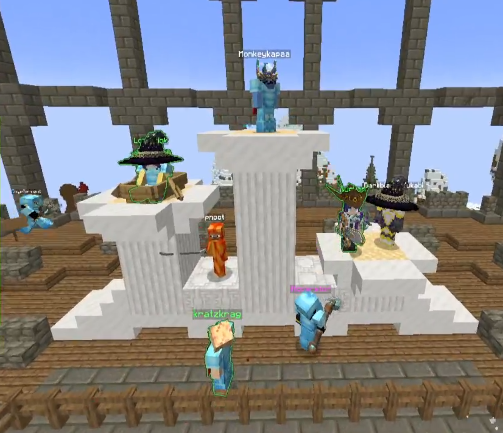

WynnCraft FightClub Season 3 Recap

Finally, after 20 long weeks, WCFC Season 3 has it’s winner: MONKEYKAPAA!!!
Season 3 initially began with the introduction of "Proto-WCFC", an unranked version of fightclub, where the referees and event host could test the PVP scene with the new WynnCraft 2.0 Abilities.
From early on in Proto-WCFC, Warrior's "Second Chance", "Mantle", and other various Paladin abilites became problematic in PVP combat, and were eventually effectively banned in the later weeks.
Once ranking had begun, the season 2 champion was dominant, fighting for nearly 10 weeks with DogeTennant, MonkeyKapaa, and kratzkrag for the rank #1 spot. Following kratzkrag's exit from WCFC, and the Mage psychokinesis nerf, Triflame's Stratiformis build began dominating the arena. However, in the final weeks of WCFC Season 3, Monkeykapaa quickly rose to the #1 spot as Triflame was playtesting his Immolation Shaman-bomber. Also in these weeks, SugVon entered the arena, a promising warrior competitor who just barely snagged the #2 spot in Week 20 of Qualifiers. Once all was shaken out, MonkeyKapaa landed in the #1 spot at week 20, with Triflame following close behind in 3rd.
Build "Metas":
From early on in the season, many builds looked like they would become the meta of the season, but rarely turned out results. After Paladin nerfs, Guardian users had to either adapt their builds for mobility, or be left in the dust by faster competitors. Acrobats had a brief stint as the "meta", but were often defeated by shamans and the 1min flight rule. Mage, too, had its time in the limelight, as Looni's and Melon's "Combat Warp" Arcanist (warpanist) builds were dominant during many of the weeks until the Entropy & Psychokinesis nerfs. Triflame's Stratiformis build seemed near unbeatable, but no other competitor could replicate it. The meta finally settled on Shaman, with DogeTennant and MonkeyKapaa's Olympic builds and Triflame's Flying Shaman defeating nearly all their enemies. An honorable mention goes to Looni's Ice-Snake build, which leveraged both Mage's rifted ability and server lag to his advantage, but had a fatal flaw against AoE attacks.
Finals Qualifiers (classes in order of most-played):
1. Monkeykapaa - Shaman
2. SugVon - Warrior
3. Triflame - Archer/Shaman/Mage
4. Darkblade_Yukabi - Warrior
5. DogeTennant - Shaman/Mage
6. Looniitick - Mage
7. FlyingSnekCannon - Warrior
8. pnoot - Assassin
9. Wackolo - Warrior
10. Octaveusmaximus - Assassin
Before Season 3 Finals even began, there was some controversy, as many competitors could not attend the event, and had to be replaced with substitutes.
However, in light of scheduling conflicts, the Season 3 Finals was a MASSIVE Clash of the titans with the Finalists being: Monkeykapaa, Triflame, Looniitick, and FlyingSnekCannon!
An honorable mention goes to SugVon, who was favored to win his match against FlyingSnekCannon, but was defeated in what is perhaps the largest upset in WCFC History since Leafish's defeat of SpamLMB in Season 2.
The final four matches began with MonkeyKapaa's overpowering victory over FlyingSnekCannon. Not only outdamaging the warrior, but outmaneuvering him as well.
In another insane upset, Triflame's "Spirit Airlines" Shaman-Bomber build was outmaneuvered and eventually bested by Looni's Ice-Snake Riftwalker build. For the second time in two consecutive seasons, the previous season champion was eliminated before the first-place match.
The final match was, Looni (#6) vs Monkeykapaa (#1, Mage vs Shaman, a clash of the titans. Looni came out strong, landing the first win of the best-of-five match, and it looked like there was nothing stopping him from ice-snaking his way to victory.
However, after some encouraging words from the crowd and some wise advice given to Monkeykapaa from the season 2 champion, Triflame, MonkeyKapaa switch playstrategies midway through the match, opting for a more airborne attack strategy, where Looni's ice snakes couldn't hurt him. This strategy won him the second fight of the match. It was 1-1.
A critical hit from MonkeyKapaa landed the shaman a 2-1 record.
Finally, after a nearly 1min 30sec fight, Monkeykapaa landed the final blow to Looni, claiming the Season 3 Title, the first ever competitor to Rank first in the Qualification Weeks, and come out as the Season's champion.
Honorable Mentions:
DogeTennant (AKA the UnderDoge), the Shaman Main, had the most matches played AND the most wins in Season 3, going 16-6 for the entire season. Additionally, he and his teammate, Darkblade_Yukabi, defeated the team "Proffer May Cry" in the 2v2s Gold-Medal match. This won their team "Idolympics" the Season 3 2v2s Title, now immortalized with IAmMouseYes's victory in Season 2.
LittleTheDragon, Morph-User, played in the second-most amount of matches, going 3-18 by the end of the season, also holding the record for the most amound of losses in a WCFC Season.
Also worth mentioning are the substitutes that fought in the finals for various competitors:
Triflame - kratzkrag
FlyingSnekCannon - Darkblade_Yukabi (after elimination)
Wackolo - Wildcard Audience Member (LittleTheDragon)
Octaveusmaximus - Rattei (formerly season 2 2v2s champion, IAmARatYes)